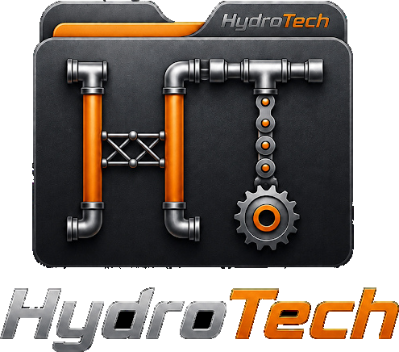

Manual de marca — versión 01
Esta guía reúne las reglas de construcción, color, tipografía y aplicación del logotipo de HydroTech, para que cualquier persona que produzca una pieza de la marca lo haga con la misma precisión con la que se diseña una tubería.
Explorar la guía
HydroTech nace para representar soluciones técnicas de ingeniería de fluidos: tuberías, sistemas de bombeo y mantenimiento industrial. Cada elemento visual de la marca —tubos, racores, cadenas y engranajes— corresponde a una pieza real del oficio que representa, para que el logotipo se lea, incluso a simple vista, como una firma técnica y no como un adorno.
Esta guía documenta cómo se construye ese lenguaje visual y cómo debe reproducirse en cualquier soporte, digital o impreso, para que la marca se mantenga coherente sin importar quién la aplique.
Precisión técnica en cada trazo del ícono.
Contraste alto sobre fondos oscuros.
Coherencia entre papelería, uniformes y flota.
El logotipo oficial encapsula la esencia técnica de la marca: un monograma H-T construido con tuberías industriales, conexiones hidráulicas, celosías de soporte y engranajes mecánicos, resguardado dentro de una carpeta corporativa.
Esa combinación comunica tres cosas a la vez: organización impecable, ingeniería de fluidos y soluciones técnicas robustas para la industria. El isotipo puede usarse solo en formatos reducidos (favicon, avatar); el logotipo completo, con el nombre debajo, es la versión por defecto en cualquier otro contexto.
Tres piezas del oficio de HydroTech se convirtieron en el vocabulario visual del isotipo. Cada una aparece también, de forma aislada, en iconografía de apoyo.
Representa gestión de datos segura, estructura corporativa sólida y organización de proyectos técnicos.
Formadas por conductos con racores que simbolizan las conexiones hidráulicas y la transmisión de fluidos.
Representan movimiento cinético, resistencia superior, fuerza mecánica y precisión absoluta en ingeniería.
El margen mínimo alrededor del logotipo equivale al ancho del icono de la carpeta, señalado aquí por las esquinas guía.
Ninguna de las siguientes variaciones está autorizada. Se muestran aquí para que el error se reconozca de inmediato, no para que se reproduzca.
Deformar o estirar las proporciones
Alterar la paleta de color oficial
Ubicarlo sobre fondos claros o con poco contraste
Añadir sombras, brillos o efectos extra
HEX #FF6A00
Acento principalHEX #C0C0C0
Soporte secundarioHEX #0D0D0D
Fondo sólidoProporción de uso recomendada: 10% naranja como acento de llamado, 25% plata para soporte metálico y 65% negro como base, para conservar el peso "industrial" de la marca.
Tipografía principal
Montserrat
Aa Bb Cc Gg Hh Tt
Se usa en títulos, encabezados y el logotipo, para transmitir una estética moderna y de alta precisión técnica.
Tipografía de cuerpo
Roboto
Aa Bb Cc Gg Hh Tt
Se usa en descripciones, manuales y textos de presentación, para garantizar una óptima legibilidad en bloques largos.
Tres soportes donde HydroTech aparece con más frecuencia: papelería, uniforme de campo y flota de servicio.
Tarjeta de presentación
Crhistian Hernández
Ingeniería de Fluidos
Parche de uniforme
Panel lateral de flota